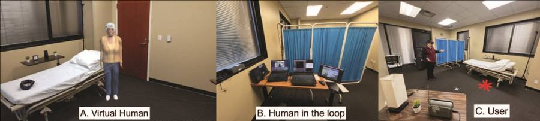
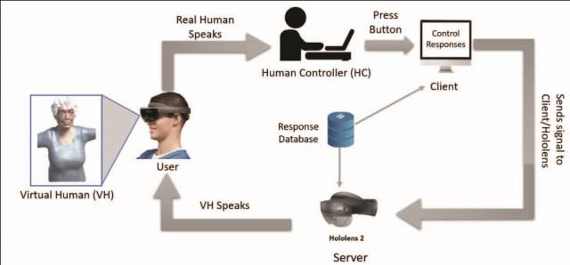

Publications · IEEE VRW 2024
Simulation of an Aware Geriatric Virtual Human in Mixed Reality
IEEE Conference on Virtual Reality and 3D User Interfaces Abstracts and Workshops (VRW) 2024, pp. 1162–1163. Demo / short paper.
The demo paper for the system: how an embodied older adult is modelled, animated, driven by a human in the loop over a TCP link, and made to seem aware of the room and of the conversation.
Part of the project Embodied Virtual Human Simulation for Caregiver Training
At a glance
- Caregivers interviewed first10Before any training content was written
- Pilot participants20Professors, students and working caregivers
- Longest conversation held16 minJust under, with a single virtual human
- DisplayHoloLens 2Unity 3D, C#
The demographic pressure behind it
Two figures from the paper’s motivation section.
- 34.2%Growth in the US population aged 65+ over the last decade
- 23.4%Predicted share of the US population aged 65+ by 2034
How a reply reaches the user
A human controller listens live and presses a button; everything downstream is automatic.
User speaks
The participant asks the virtual human a question out loud.
Controller selects
A hidden operator picks a matching reply from the Unity GUI, built from a spreadsheet of responses.
Signal over TCP
A bidirectional socket link carries the choice; the HoloLens 2 acts as server, the controller’s PC as client.
Virtual human answers
A custom plugin fires the audio, visemes, facial expression and body gesture together.
What is in the model
All figures from the paper’s description of the 3D asset.
- 778,092Vertices
- 1,496,271Edges
- 719,428Faces
- 67Joints in the rig
- 2048×2048Skin texture resolution
- 13Viseme groups for lip sync
Visemes rigged as blend shapes
Mouth shapes driven by the SALSA LipSync suite as the audio plays.
Expressions and body animations
Emotions complemented by nuanced actions and everyday gestures.
Awareness, concretely
Three mechanisms give the impression that the virtual human notices things.
Remembers the person
Names and outfit colours are entered into the database ahead of the session and linked to response buttons.
Controls the room
A lamp and a radio are switched on and off; the operator works the remote on her behalf.
Carries the thread
Details from an earlier conversation come back in a later one.
Figures from the paper


Feedback and next steps
Takeaway
Twenty professional caregivers ran through predefined scenarios. Feedback was positive on user friendliness, interactivity and the realism of the virtual human; the asks were for mobility and a broader range of responses.
The paper frames the technology as generalisable: any application where a person needs to interact with a human or a stand-in for one, from healthcare providers simulating patients to virtual assistants.
Next: training content for difficult situations, and generative AI to manage the virtual human’s responses in place of the operator.